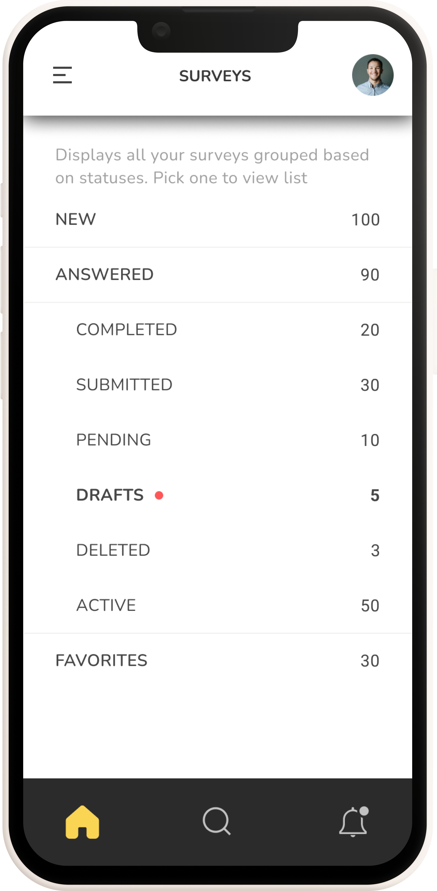
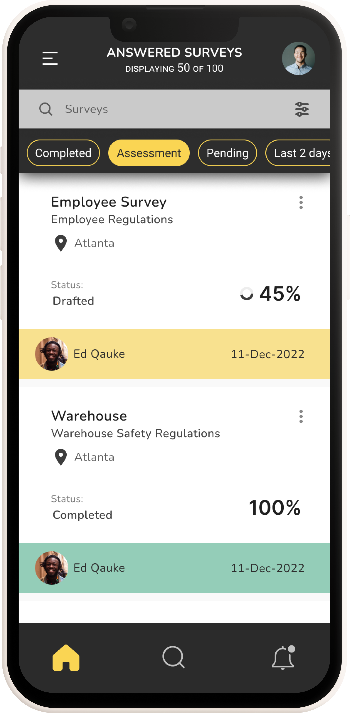
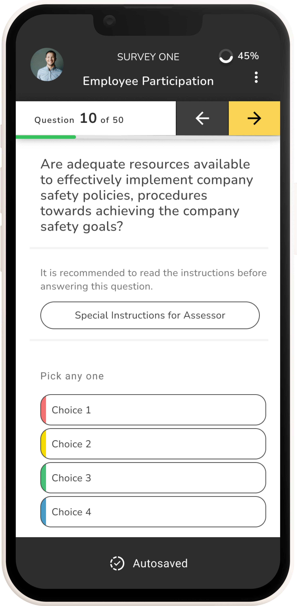

Compliance Management System: Mobile-First Field Extension
| Role | Platform | Domain | Year |
|---|---|---|---|
| UX Designer & Product Analyst | iPad & iPhone (iOS) | B2B Enterprise Compliance System | 2021 |
Introduction
This case study documents the end-to-end redesign of a legacy enterprise compliance management system for field-based users. The platform was mature and well-adopted on desktop, used by compliance managers, administrators, and office-based assessors. However, field users conducting on-site inspections, audits, and assessments at remote locations and live facilities had no way to use the system directly in the field. Without a portable, field-ready interface, assessors were forced into a two-step workaround: making notes outside the system on-site, then returning to a desktop to manually enter or update the assessment record. This broke the workflow at its most critical point, the moment of observation, and introduced delays, transcription errors, and compliance risk.
The strategic response was a purpose-built field-native features that field assessors could carry into any environment and use to fill in assessment forms directly and offline, without needing to revert to pen and paper or defer data entry to a later desktop session. The offline-first architecture, draft save, and auto-sync features were not enhancements, they were the core enablers that made direct field use viable. This case study examines that project through two interlocking lenses:
| UX Research & Design Lens | Diagnosing user pain, mapping journeys, designing for the field context, and validating through usability testing, the human-centred story of how field assessors were failing and how the redesign addressed that. |
| Product-Led Growth (PLG) Lens | Translating every UX decision into measurable product metrics, activation rate, time-to-value, feature adoption, and sustained engagement, demonstrating how UX work directly drives growth outcomes in an enterprise SaaS context. |
The approach flow is Research → Product metrics → Activation funnel → UX → Growth outcomes
Prototype
Skills used
Problem Statement
The Core Access Failure
Field assessors were conducting compliance inspections at remote sites, live facilities, and outdoor environments where a laptop or desktop was neither available nor practical. The compliance system had only a basic mobile interface, which produced a structural problem: the moment of assessment, when evidence was fresh, context was visible, and accuracy was highest, was exactly when the system could not be used, forcing assessors into a two-step workaround, making notes outside the system on-site, then returning to a desktop to enter the data. The solution was to extend the system across multiple touchpoints, desktop, iPad, and mobile, with a seamless experience that allowed assessors to fill forms, work offline, and sync data without any break in workflow.
Two Costly Workarounds Emerged
| Paper-Based Workaround | Assessors took handwritten notes on-site and manually re-entered data at the desktop later. This introduced transcription errors, duplicated effort, and created compliance gaps between the moment of observation and the point of record. |
| Deferred Completion | Assessors waited until returning to a fixed location to complete digital records, hours or days after the site visit. Observations faded, context was lost, and time-sensitive incidents were flagged late. |
The Product-Level Symptom: Broken Activation
From a product analytics perspective, these workarounds showed up as a catastrophic activation failure. When the iOS extension was first introduced (pre-redesign), field users were assigned licences but rarely completed assessments through the app. The system had a field access problem, but it also had a product completion problem.
| Desktop Completion Rate | 82%, the baseline for a well-functioning system |
| iPad Pre-Redesign Completion Rate | 21%, 4× below desktop baseline |
| Primary Abandonment Point | Draft save and offline sync, the exact moments the field workflow required most |
Problem Statement Summary
- Manual note-taking
- No offline access
- Frequent data loss
- Delayed validations
- Poor mobile compatibility
Research & Discovery Methodology
The research phase combined qualitative field investigation with quantitative funnel analysis. This dual approach was deliberate: qualitative methods revealed why assessors were failing; quantitative analysis revealed where and how severely. Together they built the complete picture needed to design a credible, evidence-driven solution.
Research Methods
| Stakeholder Discovery Workshops | Facilitated sessions with compliance managers, field assessors, and system administrators. Used feedback grids (Works Well / Needs to Change / Questions / Ideas) to surface competing priorities and hidden assumptions. |
| Field Observation & User Interviews | On-site observation of assessors at work, watching how notes were taken, how the app was (or wasn't) used, and where confidence broke down. Interviews followed each observation to understand the emotional and cognitive experience. |
| User Personas & Empathy Mapping | Synthesised research into a primary persona (Adam, Field & Survey Officer) with empathy maps capturing what he does, thinks, feels, and needs at each stage of the assessment workflow. |
| Customer Journey Mapping (As-Is) | Mapped the current-state journey step-by-step, from travelling to a site through to post-submission, documenting actions, thoughts, feelings, and needs at each stage. Surfaced the emotional low points (anxiety, confusion, frustration) that corresponded to interface failures. |
| Activation Funnel Analysis | Analysed the 6-stage digital funnel from iPad licence assignment through to full assessment submission. Identified the funnel stage where drop-off was most severe (draft save / sync) and quantified the gap between desktop and iPad completion rates. |
| System Usability Scale (SUS) | Conducted SUS evaluations on both the desktop and the pre-redesign iPad interface. The desktop scored 76 (Good). The iPad pre-redesign scored 49 (Not Acceptable), a quantified confirmation of the usability gap. |
📊 Stakeholder Feedback Grid
| ✅ Works Well | ⚠️ Needs to Change | ❓ Questions | 💡 New Ideas |
|---|---|---|---|
| On-field recording is easy and fast Manual work eliminated Templates auto-load based on location Critical incident notifications visible Frequent auto-saving |
App performance is slow Notifications are unintuitive Syncing is confusing |
How does communication work for non-iOS? What are the offline data limits? |
SMS/iMessage-based incident alerts Gesture-based navigation Voice-based search and incident recording Dashboard with recent activities Centralized notifications tab |

👤 Persona – Adam (Field & Survey Officer)

👤 Empathy Map – Adam (Field & Survey Officer)

Stakeholder Assumptions and Risk Mapping
| Assumption | Risk Level | Validation Approach |
|---|---|---|
| Users prefer mobile recording | High | Field interviews, analytics |
| SMS/iMessage is the best alert method | Medium | Survey, usage data |
| Offline sync is technically feasible | High | Dev partner consultation |
| Templates are reused across locations | Medium | Contextual inquiry |
| Users are tech-savvy and need minimal training | Low | Persona analysis |

As-Is Customer Journey: The Failing Field Experience
| Step | Does | Thinks | Feels | Needs |
|---|---|---|---|---|
| Travel to site, take notes | Uses pen & paper | "Hope I don't lose these notes." | Anxious, cautious | Mobile recording, auto-save |
| Choose template | Searches manually | "Which one fits this site?" | Confused, uncertain | Smart template suggestions |
| Fill out basic details | Enters manually | "This takes too long." | Frustrated | Autofill from location or history |
| Answer questionnaire | Scrolls through long forms | "I might miss something important." | Overwhelmed | Simplified UI, criticality alerts |
| Continue later | Saves and exits | "Will this sync correctly?" | Worried | Reliable offline sync, confirmation |

Key Friction Points from Field Research
- No reliable offline mode, one dropped connection lost all unsaved data
- Draft save was hidden and manual, most users didn't know it existed; auto-save was absent
- Sync was opaque, no visibility on whether data had synced; users re-entered data out of fear
- Desktop navigation ported to iPad, deep menus designed for mouse use were unusable with gloved or one-handed field operation
- Form inputs not optimised for touch, small tap targets, no keyboard auto-dismiss, date pickers unsuited to iOS
- No field-specific features, photo evidence, quick notes, and site context required separate apps
PLG Framework Application
Product-Led Growth is typically associated with freemium SaaS and self-serve models. Its core logic, however, applies directly to enterprise product extensions: the product must deliver value fast enough and reliably enough to drive sustained engagement, without relying on sales or support to carry users to the aha moment.
Mapping PLG Concepts to This Project
| Activation (Aha Moment) | A field user completes their first full assessment on iPad and submits it, experiencing the system working at the point of inspection for the first time. |
| Time-to-Value | How quickly a newly iPad-enabled assessor submits their first completed assessment. Pre-redesign: ~62 minutes with high abandonment. Post-redesign target: ~28 minutes. |
| Retention | Sustained assessment submission rate over 30–90 days, not logins or time-in-app, but actual compliance output. |
| Feature Adoption | Uptake of offline mode, draft save, and auto-sync, the three features that make field use viable and directly enable the aha moment. |
| Expansion Signal (PQL) | Accounts where 3+ assessments are completed via iPad in the first 14 days, including at least one via the offline path, a strong signal for additional field licence expansion. |
| Churn Risk Indicator | Accounts with high iPad licence assignment but low completion rate, flagged as renewal risk requiring customer success intervention. |
The Aha Moment: Two Valid Completion Paths
Unlike a simple SaaS activation, the aha moment in this system has two equally valid routes, both result in a fully submitted assessment and both count as activation:
| Path 1: Single Session | A field user completes their first full assessment on iPad and submits it, experiencing the system working at the point of inspection for the first time. |
| Path 2: Draft → Offline → Sync → Submit | User starts assessment → saves to draft (auto or manual) → completes offline → draft auto-syncs on reconnect → user reviews and submits. Typical for complex, multi-location assessments. Pre-redesign: effectively broken. Post-redesign: a primary viable route. |
The redesign's primary success condition was making Path 2 as reliable as Path 1, because for the most demanding field assessments, Path 2 is the only realistic option.
PLG Translation: UX Work as Growth Interventions
Every phase of UX research and design work maps directly to a PLG metric. This is not just a usability project, it is a growth intervention:
| Identified desktop inaccessibility through field research | Activation blocker analysis, root cause of near-zero field completion rate. This is the PLG equivalent of mapping funnel drop-off to a specific product failure. |
| Designed offline-first assessment capture with draft save | Removed the single biggest barrier to Path 2 completion, the core aha moment enabler. Without this, activation cannot improve. |
| Built auto-sync with visible status indicator | Reduced abandonment anxiety, the sync state indicator directly addresses the emotional barrier (fear of data loss) that caused mid-assessment dropout. |
| Simplified iPad UI with field-only feature set | Reduced time-to-value, assessors reach the submission screen faster with fewer navigation steps. |
| SUS scoring before and after redesign | Quantified UX improvement as a proxy for activation probability, connects interface quality to a measurable growth output. |
| Designed contextual first-use onboarding tooltips | Feature discovery acceleration, ensured offline mode and draft save were adopted early rather than discovered weeks later. |
Design Solution: Offline-First, Field-Native
Design principle: The iPad interface must work reliably in the worst-case field scenario, no connectivity, one hand occupied, gloves possible, time pressure real. Everything else follows from that constraint.
From As-Is to To-Be: The Redesigned Journey
| Stage | Does | Thinks | Feels | Gains |
|---|---|---|---|---|
| Travel to site | Opens app, auto-loads template | "This is fast and accurate." | Confident, focused | Location-based template suggestions |
| Fill out details | Autofill from GPS and history | "I'm saving so much time." | Relieved | Smart autofill, reduced manual entry |
| Record assessment | Uses offline mode with auto-save | "No worries about data loss." | Secure, efficient | Offline recording, auto-save |
| View alerts | Receives SMS/iMessage notifications | "I can act immediately." | Empowered | Real-time criticality alerts |
| Submit & sync | Syncs automatically when online | "Everything's backed up." | Satisfied | Seamless sync, confirmation feedback |

Before & After: Key Design Changes
| ❌ No offline mode, data lost on disconnection | ✅ Offline-first architecture: assessments work fully without any connectivity |
| ❌ Manual, hidden draft save | ✅ Auto-save every 60 seconds + persistent draft recovery on relaunch |
| ❌ Opaque sync, no user feedback | ✅ Sync status bar: Saved Offline → Syncing… → Submitted, visible at all times |
| ❌ Desktop navigation (5+ taps to reach assessment) | ✅ Flat field navigation, assessment launch in 2 taps from home screen |
| ❌ Small touch targets, desktop form controls | ✅ iOS-native controls, large tap targets, optimised for gloved/one-hand use |
| ❌ No photo or note capture within the flow | ✅ In-context photo attachment and quick notes embedded within each assessment field |
| ❌ No onboarding for new iPad users | ✅ Contextual first-use tooltips on offline mode, draft save, and sync |
Feature Prioritisation: Phased Delivery
To guide the redesign, we developed a staged capability roadmap grounded in field research and user feedback. This roadmap prioritized progressive empowerment for assessors—from basic mobile access to advanced interaction modes.
📌 Short-Term Enhancements
- Mobile login, assessment creation, and resume flow
- Offline mode with auto-sync and criticality alerts
- Autosave and sync status visibility
🚀 Long-Term Vision
- Dashboard with recent activities and centralized notifications
- Gesture-based navigation for faster input
- Voice-enabled search and incident recording
- SMS/iMessage alerts for critical events
This phased approach ensured that each release delivered meaningful value while laying the foundation for intuitive, high-impact experiences.


Stakeholder Map

Users Hopes and Fears

Analytics: Activation Funnel & Completion Analysis
The 6-Stage Activation Funnel
The funnel begins at iPad licence assignment, existing enterprise users being extended to a new platform, not new sign-ups. The drop-off pattern reveals where the field extension failed before the redesign:
| Funnel Stage | Desktop | iPad Pre | iPad Post (Proj) | Interpretation |
|---|---|---|---|---|
| iPad Licence Assigned | 500 (100%) | 300 (100%) | 300 (100%) | Baseline, existing users given iPad access |
| First iPad Login | 480 (96%) | 228 (76%) | 261 (87%) | iPad drop hints at device unfamiliarity |
| Assessment Opened on iPad | 450 (90%) | 150 (50%) | 225 (75%) | Half of iPad users couldn't navigate to an assessment |
| Field Data Entered (any) | 430 (86%) | 108 (36%) | 198 (66%) | Most couldn't enter data effectively on iPad |
| Draft Saved or Submitted | 415 (83%) | 78 (26%) | 177 (59%) | Draft save broken pre-redesign; most abandoned |
| Assessment Fully Submitted ★ | 410 (82%) | 63 (21%) | 165 (55%) | Aha Moment, 4× gap pre-redesign; projected to close significantly |
Completion Path Breakdown
| Completion Path | Desktop | iPad Pre-Redesign | iPad Post-Redesign (Proj) |
|---|---|---|---|
| Single Session Complete | 82% | 21% | 55% |
| Draft → Sync → Submit | 10% | 5% | 38% |
| Abandoned | 8% | 74% | 7% |
PLG Insight: The post-redesign projection shows a deliberate shift, the draft→sync→submit path grows from 5% to 38% of completions. The feature that drives activation is offline mode, not UI polish.
Feature Adoption (Post-Launch, 8 Weeks)
| Feature | Week 1 | Week 4 | Week 8 | PLG Role |
|---|---|---|---|---|
| Offline Mode | 41% | 68% | 83% | Aha Moment Core |
| Auto-Sync on Reconnect | 38% | 72% | 88% | Aha Moment Core |
| Draft Save & Resume | 45% | 74% | 86% | Aha Moment Core |
| Photo Attachment | 22% | 44% | 61% | Secondary |
| Quick Notes | 18% | 38% | 54% | Secondary |
| Offline Map | 12% | 28% | 41% | Secondary |
Impact & Projected Outcomes
Full Impact Summary
| Metric | Before (iPad Pre) | Projected After | Basis |
|---|---|---|---|
| Assessment Completion Rate (iPad) | 21% | 55% | Funnel recovery from friction removal and offline-path reliability |
| Draft→Sync→Submit Path Usage | 5% | 38% of completions | Offline workflow now functional, Path 2 becomes a primary route |
| Time to First Submission | ~62 minutes | ~28 minutes | Step count 9→4 for Path 1; offline removes reconnection wait time |
| SUS Score (iPad interface) | 49, Poor | 81, Excellent | Post-redesign usability testing estimate vs 68-point threshold |
| 90-Day Sustained Submission Rate | 17% | ~64% | Activation-retention correlation; benchmarked from Amplitude PLG data |
| Field Licence Utilisation | ~21% | ~55% | Direct mirror of completion rate, licences used vs assigned |
✏️ Design Process
Wireframes (Balsamiq)
- Explored multiple user journeys
- Iterated 2–3 versions
- Focused on usability and task efficiency

High-Fidelity UI
- Dashboard
- Assessment List (Card & List views)
- Quick Filters & Search
- Record Assessment
- Assessment Summary





Strategic PLG Recommendations
Instrument Offline Workflows Specifically
Standard analytics cannot capture offline behaviour at the time of occurrence. Implementing a local event queue that timestamps and stores events offline, syncing them with the server on reconnect, gives the product team full visibility into the offline assessment journey, including where offline users drop off.
Define the Product Qualified Lead (PQL) for Enterprise Expansion
Field assessors who complete 3+ assessments via iPad in their first 14 days, including at least one via the offline path, are strong signals for licence expansion. These accounts should be flagged in the CRM for account manager outreach, not to sell, but to identify whether additional field assessors in the organisation would benefit from iPad access.
Surface Draft Recovery Prominently on Relaunch
The most anxiety-inducing moment for field users is returning to the app after a connectivity loss. The relaunch screen should proactively surface any pending drafts: "You have 1 assessment saved offline, ready to sync." This single intervention can meaningfully reduce abandonment at the sync stage.
Use Completion Rate as the North Star Metric
In enterprise SaaS, renewal conversations are won or lost on demonstrated usage value. Assessment completion rate, not logins, not time-in-app, maps directly to compliance outcomes and licence justification. It should be the primary metric in customer success dashboards and QBR decks.